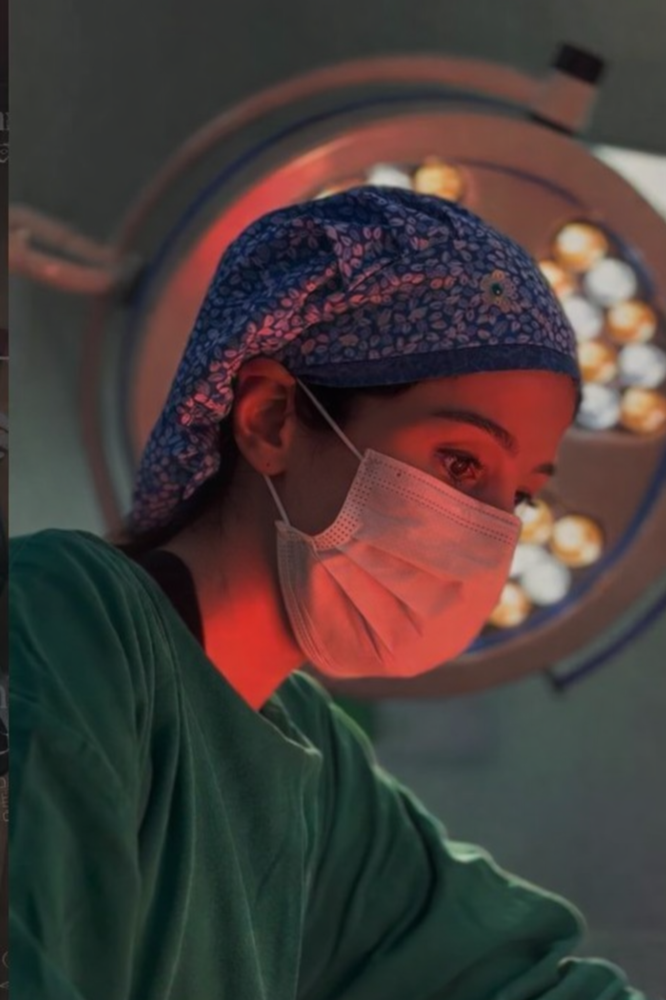

Mastopexia, mamoplastia, lipoabdominoplastia e lipoescultura planejadas caso a caso, com segurança e acompanhamento do pré ao pós-operatório.

Sou apaixonada por devolver autoestima às minhas pacientes. Cada cirurgia é planejada com delicadeza, escuta atenta e compromisso com aquilo que realmente faz sentido para você.
Minha atuação é baseada em um olhar individualizado, respeitando a anatomia, os objetivos e, principalmente, a segurança em cada etapa do processo.
Elevar e reposicionar as mamas, com técnica alinhada à necessidade e ao perfil de cada paciente.
Planejamento cuidadoso para ganho de volume e projeção com proporção e naturalidade.
Redução do volume mamário com foco em conforto, harmonia corporal e bem-estar.
Combinação de técnicas para melhorar contorno abdominal, flacidez e definição corporal.
Remodelação estratégica do contorno corporal, respeitando anatomia e objetivos da paciente.
Planejamento global para valorizar a silhueta com equilíbrio, segurança e expectativa realista.
Cada indicação cirúrgica deve ser definida em consulta, após avaliação médica individualizada.
Consulta para entender objetivos, avaliar anatomia e esclarecer dúvidas.
Definição da técnica mais adequada para o seu caso, com segurança em primeiro lugar.
Procedimento realizado em ambiente hospitalar, com equipe experiente.
Suporte no pós-operatório, com orientações claras em todas as etapas.
Ed. Thomé de Souza
Av. Antônio Carlos Magalhães, 3244 · Sala 1416
Caminho das Árvores · Salvador · BA
CEP 41820-000
Segunda a sexta · 08h às 18h